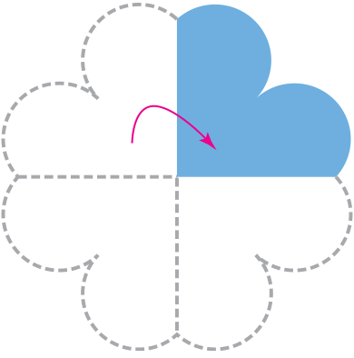

다음과 같이 종이를 두 번 접고, 각을 본떠 봅시다.
준비물 169쪽
물음 1
물음 +
물음 2
종이를 두 번 접고, 각을 본떠 보세요.
활동영상 보기
앞에서 접은 선이 맞닿도록
한 번 더 접어 주세요.

종이를 두 번 접어 만든 각은 어떤 모양인가요?
곧은 선 2개로 이루어진 각이 생겼습니다.
다른 모양의 종이도 같은 방법으로 두 번 접고, 각을 본떠 보세요.
예

 앞에서 접은 선이 맞닿도록
앞에서 접은 선이 맞닿도록 곧은 선 2개로 이루어진 각이 생겼습니다.
곧은 선 2개로 이루어진 각이 생겼습니다.